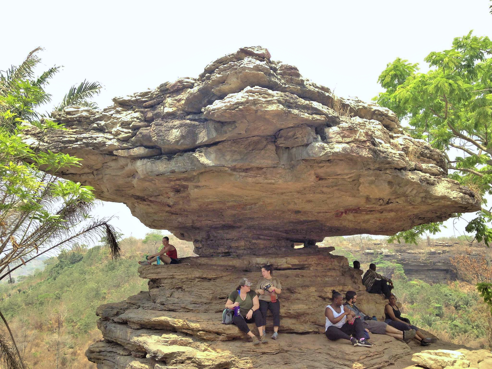

TOURISTRIST PLACES IN GHANA
TOURISTRIST ATTRACTIONS
Ghana,Officially the Republic of Ghana, is a country in West Africa.
It spans along the Gulf of Guinea and the Atlantic Ocean,
sharing borders with the Ivory Coast in the west, Burkina Faso in the north,
Togo in the east, the Gulf of Guinea and the Atlantic Ocean in the south.
GHANA has many torist places people arond the world like to visit
and expreince the fun and culture of the country.
some place are the Kakum National Park, many kinds of falls,
the bigest tree, the deep forest and mesuems etc.
The Mausoleum Located in downtown Accra,
Ghana is the Kwame Nkrumah Memorial Park and Mausoleum.
The Mausoleum is the final resting place of Ghana’s first President and Africanist.
Ghana is the Kwame Nkrumah Memorial Park and Mausoleum.
The Mausoleum is the final resting place of Ghana’s first President and Africanist.

The Umbrella Rock is a rock found at the site of the Boti Falls in Yilo Krobo District, Ghana.
As the name implies, the overhang on the top is large enough to cover 12 to 15 people at once.
Even though the pivot on which the top rock lies on might seem small, it's very strong.
Yearly, many Tourists travel to Boti Falls for its natural beauty
As the name implies, the overhang on the top is large enough to cover 12 to 15 people at once.
Even though the pivot on which the top rock lies on might seem small, it's very strong.
Yearly, many Tourists travel to Boti Falls for its natural beauty

Kakum is located in the central regin of Ghana,
and people visit there to expreice the canopy walk
and see sole wild and domestic animals.
and people visit there to expreice the canopy walk
and see sole wild and domestic animals.

Mountain Afadjato is one of the highest mountains
in Ghana standing at an elevation of 885 metres (2,904 ft).
Mount Afadja is one of the most visited tourist attractions in the Volta Region of Ghana
welcoming thousands of visitors from around the globe annually.
The nearby attarctionsare Tagbo Falls and Wli Falls.
in Ghana standing at an elevation of 885 metres (2,904 ft).
Mount Afadja is one of the most visited tourist attractions in the Volta Region of Ghana
welcoming thousands of visitors from around the globe annually.
The nearby attarctionsare Tagbo Falls and Wli Falls.
Mole national park is a large savannahfilled with
African elephants, buffalos, baboons, warthogs, and kob antelopes.
You’ll find almost 100 mammal species
and at least 300 bird species here.
African elephants, buffalos, baboons, warthogs, and kob antelopes.
You’ll find almost 100 mammal species
and at least 300 bird species here.
The Akosombo Dam, also known as the Volta Dam,
is a hydroelectric dam on the Volta River in southeastern Ghana
the hydroelectric power scheme have brought economic and social benefits:
the dam generates electricity which in turn supports aluminium manufacture
and generates income, whilst the lake allows easier inland transport and
is a potentially valuable resource for irrigation, fishing.
is a hydroelectric dam on the Volta River in southeastern Ghana
the hydroelectric power scheme have brought economic and social benefits:
the dam generates electricity which in turn supports aluminium manufacture
and generates income, whilst the lake allows easier inland transport and
is a potentially valuable resource for irrigation, fishing.
Boti Falls is located just 17km North-east of Koforidua,
the eastern regional capital There are actually two falls at Boti: The upper falls and the lower falls.
These are the main features of the Boti Falls (what has widely been talked about is the lower falls).
The locals describe it as male and female.
the eastern regional capital There are actually two falls at Boti: The upper falls and the lower falls.
These are the main features of the Boti Falls (what has widely been talked about is the lower falls).
The locals describe it as male and female.